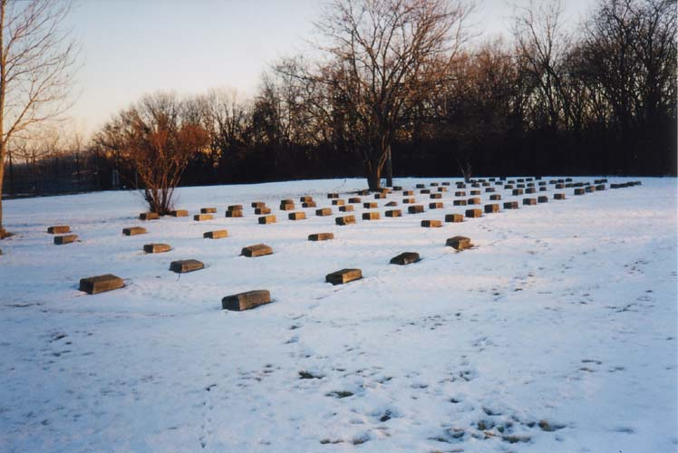
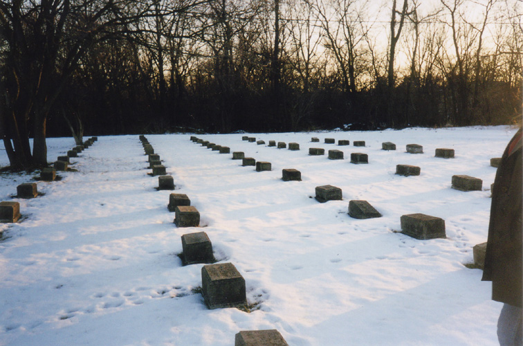
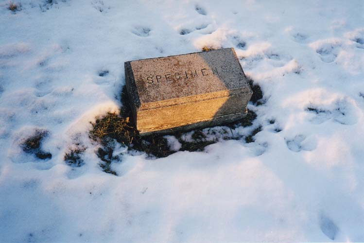

This is one of the cemeteries where the state of Ohio buried the residents of the mental hospital whose families either didn't claim them or were too poor to afford to do it themselves. The gravestones are all the same size and shape, and most are simply a name with a birth and death date. It's a sad place.

But the creepiest thing about the asylum cemetery is the presence of two gravestones marked simply SPECIMENS. What the hell are specimens? They must have been human at one time, or they wouldn't have bothered with interment. Maybe they had medical school labs at the old hospital. Whatever the reason, the specimens gravestones are just plain bizarre. A photo of a SPECIMENS stone occupies the very last page of my first book, Forgotten Columbus.

Aside from the big blocky tombstones, on a later trip we discovered some small, flat stones flush with the grass. They were buried in the snow the first time I found the asylum cemetery at TICO.
I wonder if this one is haunted. So many people had such miserable existences at the old asylum, and these were the ones who had no one to alleviate their pain. It seems very possible. It also wouldn't surprise me if the ODOT workers saw some strange things in their shiny new building. I just wish I'd had the opportunity to explore the original structure before they dismantled it.
Harper-McKinley Cemetery
Columbus Developmental Center Cemetery
Rootsweb: State of Ohio Asylum for the Insane Cemetery
Back
forgottenohio@yahoo.com